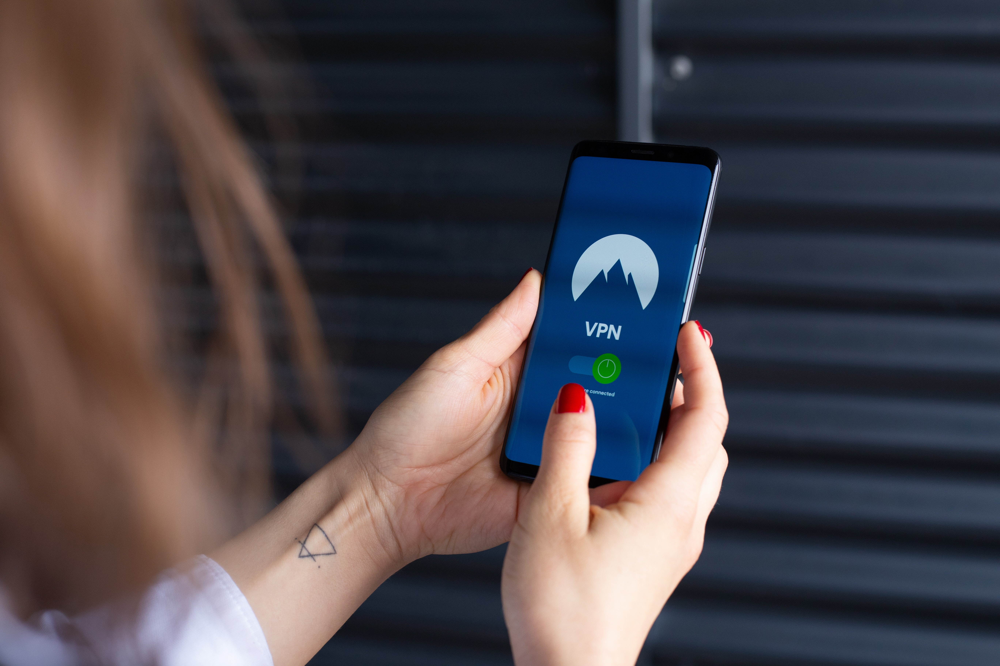
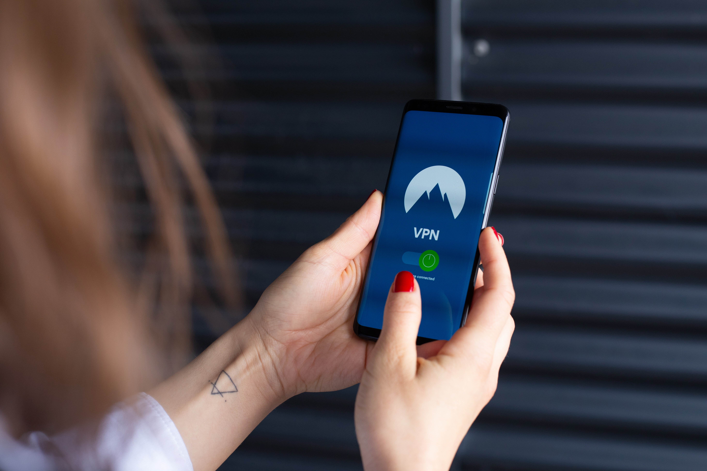

Our Work
A couple of our accomplishments


 

Contracts with DOD
Local business partners
Industry Leading cable plants
Parent Company of NordVPN
Goose-Tech is a company that has positioned itself as a leading provider of technology
solutions to both private and public sector clients. One of their core business areas is
securing contracts with the Department of Defense (DOD) to provide a wide range of technology
services, including network security, cloud computing, and software development. To achieve this,
Goose-Tech has established a team of experts who are well-versed in the requirements and
regulations of the DOD, and are able to provide solutions that meet or exceed their rigorous standards.
Networking with business partners is also a crucial aspect of Goose-Tech's work.
The company is constantly seeking out new opportunities to collaborate with other
organizations in order to expand their reach and capabilities. This involves attending
industry events, establishing partnerships with other technology firms, and building relationships
with key decision-makers in the industry.
Goose-Tech is also involved in the development and maintenance of cable plants. This involves designing,
installing, and maintaining network cabling infrastructure for clients in a variety of industries,
including healthcare, education, and finance. This work is critical for ensuring that clients have
reliable, high-speed connectivity and can access the technology solutions they need to run their
businesses effectively.
Finally, as the parent company of NordVPN, Goose-Tech is at the forefront of the virtual private network industry. NordVPN is a highly popular VPN service that is used by millions of people around the world to protect their online privacy and security. Goose-Tech plays a key role in the development and marketing of NordVPN, ensuring that it remains a leading provider of VPN services.